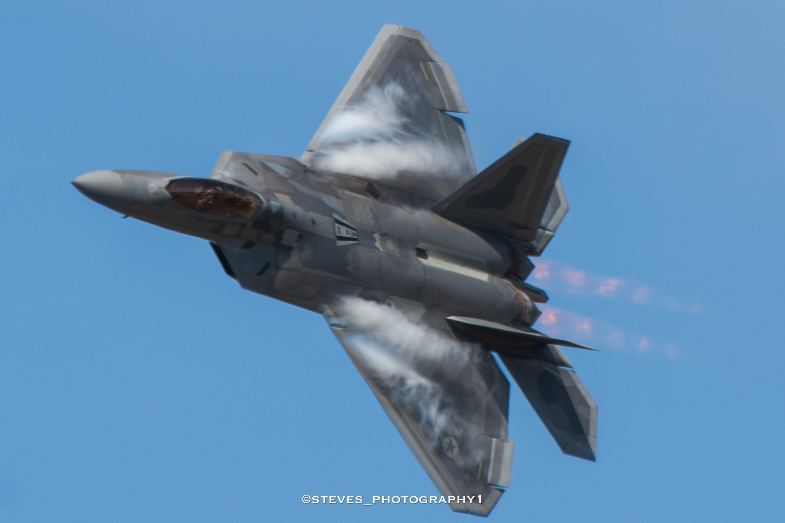
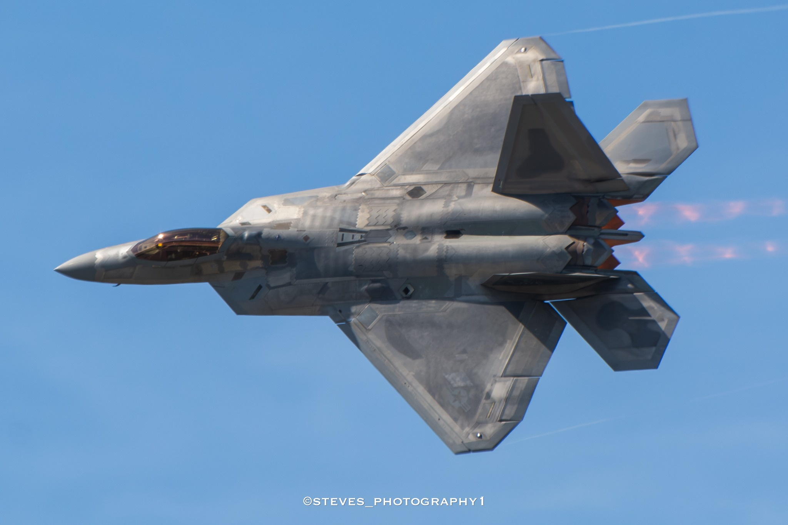
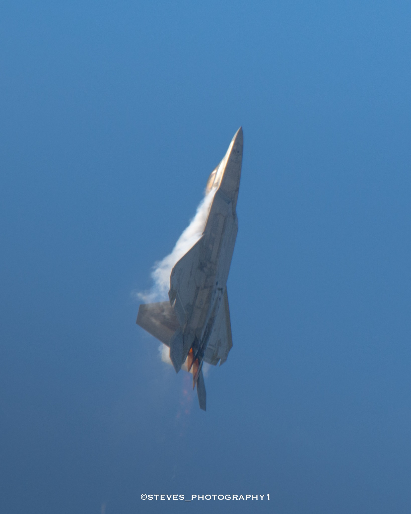
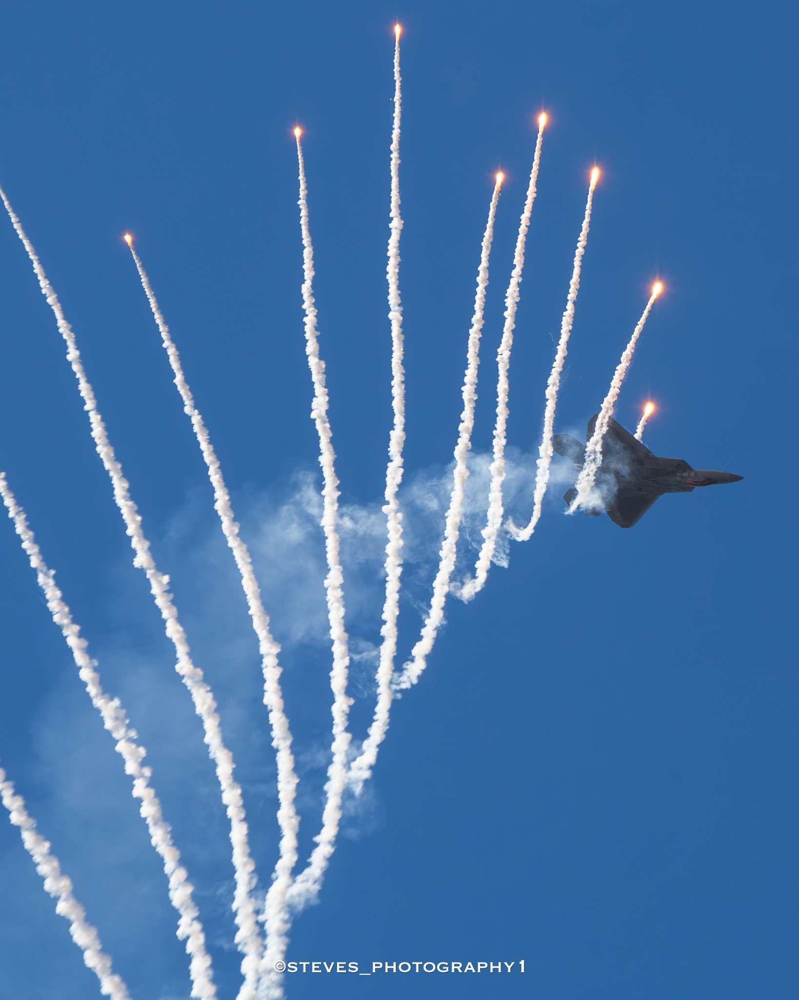
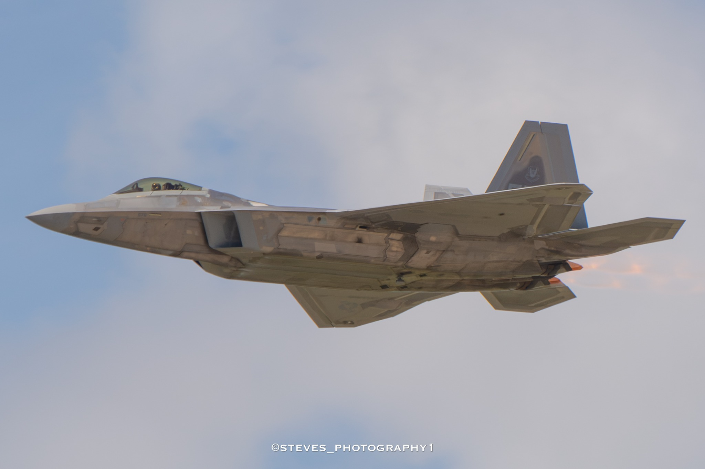
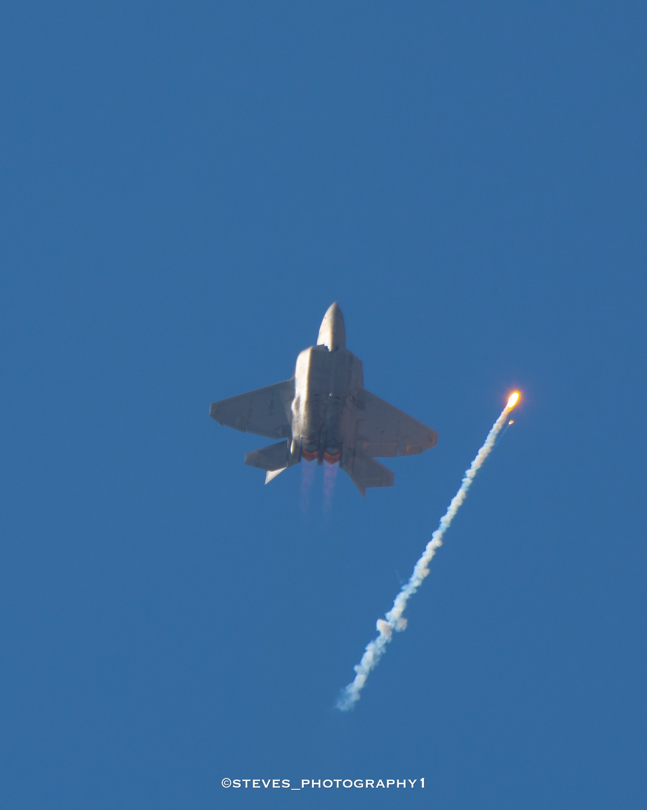
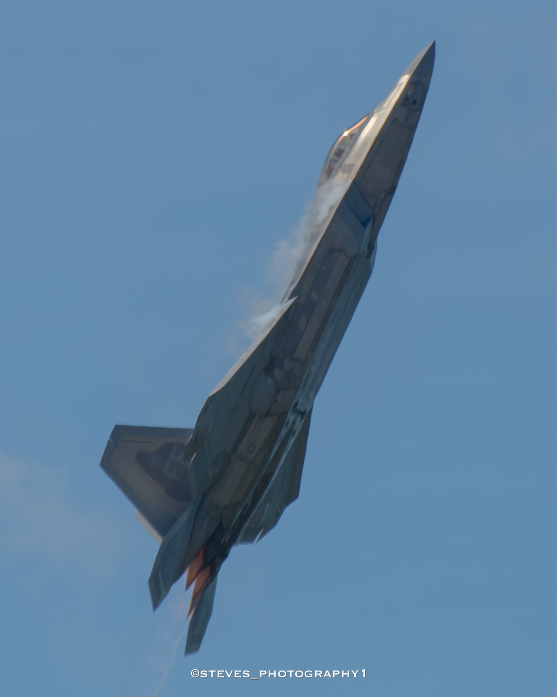

STEVE'S PHOTOGRAPHY · SUBJECT
F-22
Raptor.
A collection of F-22 Raptor photographs covering side profiles, high-alpha maneuvers, vapor, afterburner climbs, and overhead passes.
07 PHOTOGRAPHS






